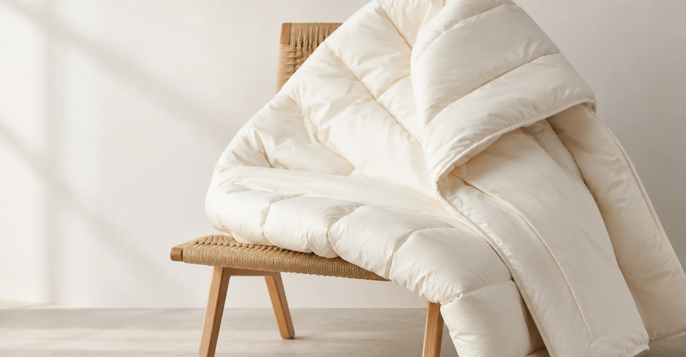
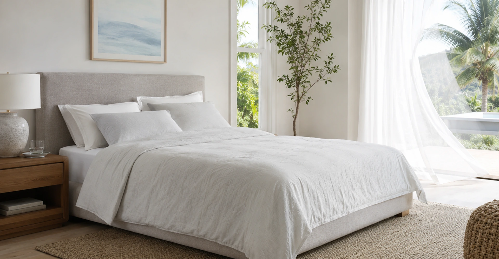
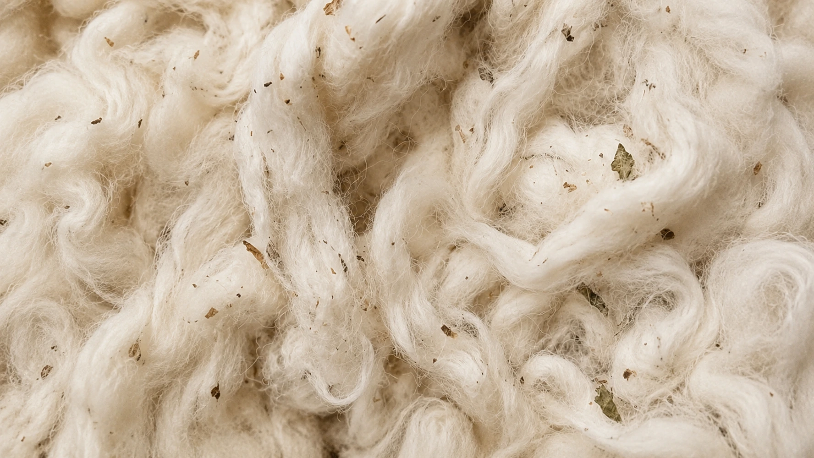
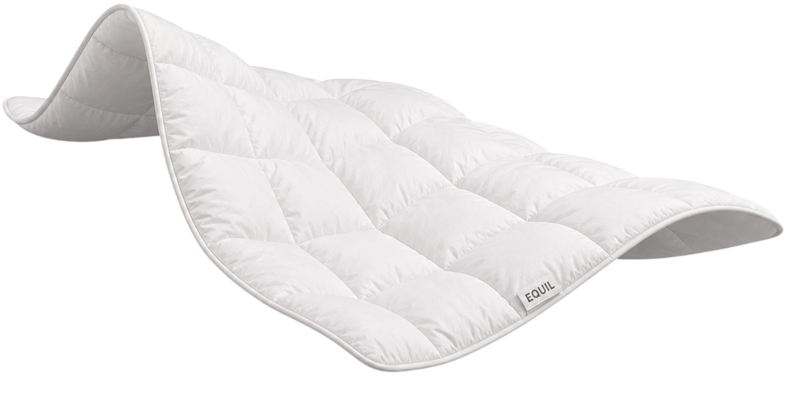
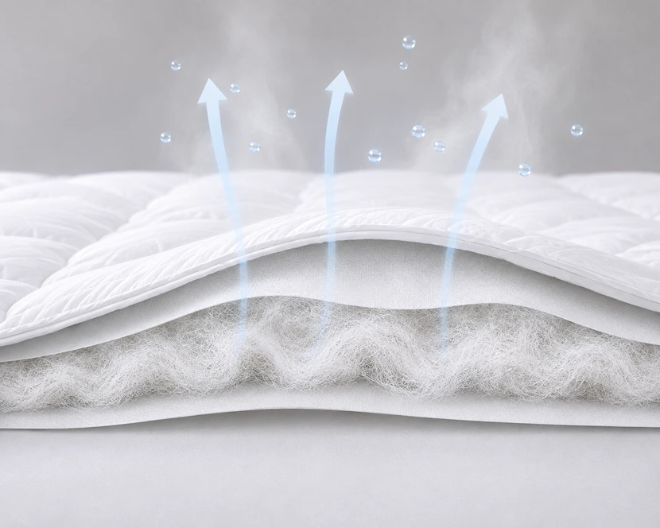
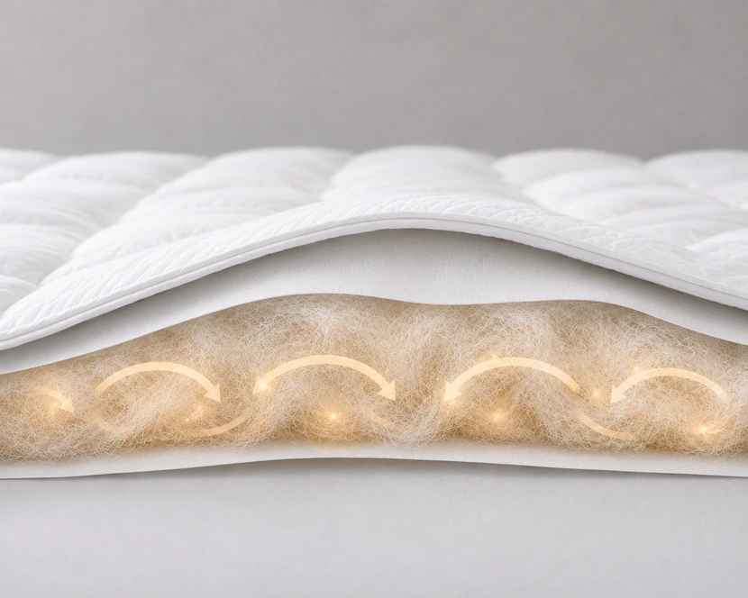
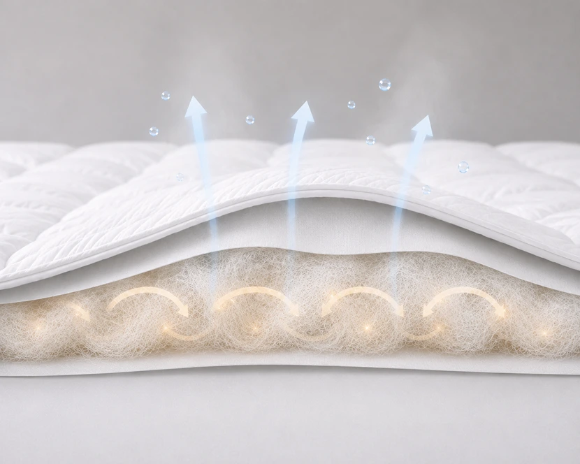
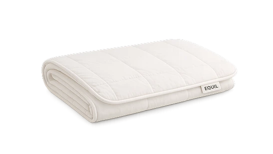
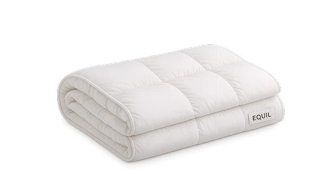
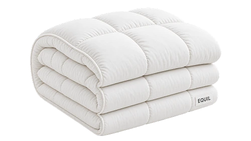

01
양모 원료 선별
양모의 섬유 길이와 굵기, 탄력과 청결 상태를 확인해 침구 충전재에 적합한 원료를 선별합니다.
균일한 양모를 사용해 이불 전체에서 부드러운 촉감과 일정한 볼륨이 유지되도록 합니다.

계절에 따라 달라지는 온도와 습도를 고려해,
언제나 쾌적하고 포근한 잠을 위한 침구를 만들었습니다.

잠자는 동안 우리 몸은 끊임없이 열과 습기를 내보냅니다.
이불 속에 열이 지나치게 머물면 덥고 답답해지고, 온기가 빠르게 사라지면 깊은 잠을 유지하기 어렵습니다.
EQUIL은 양모가 지닌 공기 보유력과 습도 조절 특성에 주목했습니다.
여름에는 가볍고 쾌적하게, 겨울에는 따뜻하고 포근하게 사용할 수 있도록 충전량과 퀼팅 구조를 각각 다르게 설계합니다.
양모의 섬유 길이와 굵기, 탄력과 청결 상태를 확인해 침구 충전재에 적합한 원료를 선별합니다.
균일한 양모를 사용해 이불 전체에서 부드러운 촉감과 일정한 볼륨이 유지되도록 합니다.
선별한 양모에서 먼지와 이물질을 제거하고 침구 충전재에 적합한 상태로 세척합니다.
섬유의 자연스러운 탄성과 공기층은 유지하면서 쾌적하게 사용할 수 있도록 원료를 정돈합니다.
세척과 건조를 마친 양모를 섬세하게 풀고 빗질해 섬유의 방향과 밀도를 고르게 정리합니다.
이 과정을 통해 양모 사이에 미세한 공기층이 형성되고, 이불 전체에 균일하게 충전할 수 있는 시트 형태로 가공됩니다.
퀄팅은 단순한 표면 장식이 아니라 양모의 위치를 안정적으로 유지하는 구조입니다.
계절별 충전량과 이불의 움직임을 고려해 퀄팅의 크기와 간격을 정하고,
사용 중 양모가 한쪽으로 이동하거나 뭉치는 현상을 줄입니다.


사계절을 함께하는 양모
SEASONAL COMFORT
여름의 쾌적함부터 겨울의 포근함까지.
계절에 필요한 기능을 고려한 세 가지 울 레이어를 제안합니다.

여름 이불은 양모 충전량을 가볍게 구성하고, 얇고 유연한 구조를 적용해 몸을 무겁게 누르지 않도록 설계합니다. 양모가 수분 증기를 흡수하고 방출하는 특성을 활용해 에어컨을 사용하는 여름 밤에도 과도하게 춥거나 눅눅하지 않은 수면 환경을 고려했습니다.

겨울 양모 이불은 세 제품 중 가장 풍성한 양모 충전량을 적용해 충분한 공기층을 형성합니다. 촘촘한 퀼팅이 양모를 고르게 잡아주고, 몸을 따라 부드럽게 내려앉는 구조가 차가운 외부 공기와의 접촉을 줄여 포근한 수면 환경을 만들어줍니다.

봄·가을 양모 이불은 여름용보다 충분한 충전량을 적용하면서도 겨울용처럼 무겁거나 두껍지 않도록 설계합니다. 양모의 공기층과 흡습성을 활용해 쌀쌀한 새벽에는 온기를 유지하고, 기온이 올라갈 때는 습기가 과도하게 머물지 않도록 보온성과 쾌적함의 균형을 맞춥니다.
Designed for Every Season


